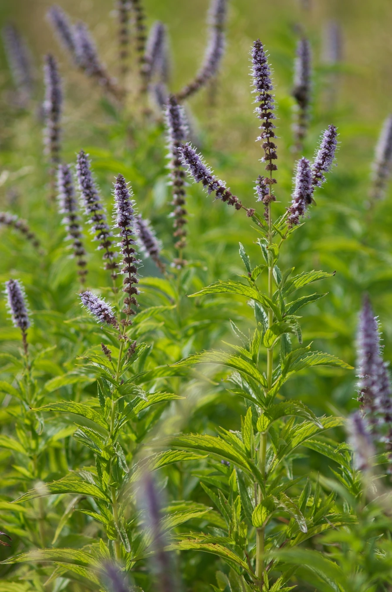

农作物与经济植物 · 植物界
留兰香 Mentha spicata

唇形科多年生草本，叶面皱缩、香气清甜，是口香糖与牙膏薄荷香型的主要来源，也常作烹饪香草栽培。
- 分类
- 门被子植物门纲木兰纲目唇形目科唇形科属薄荷属
- 栖息环境
- 湿润的草地、溪边与菜园，喜光、喜湿、耐寒
- 地理分布
- 原产欧洲与西亚，现世界温带地区广泛栽培，中国各地有种植
- 保护级别
- 暂无评估；栽培作物，逸生种群常见
物种志
留兰香为唇形科薄荷属多年生草本，具匍匐根状茎，株高 30–100 厘米，茎四棱，光滑或近光滑。叶对生，卵状披针形，长 3–7 厘米，边缘有尖锐锯齿，表面皱缩、深绿色，揉碎后散发清甜香气。轮伞花序密集组成顶生穗状花序，花小，淡紫或白色，花期 7–9 月；小坚果褐色。
留兰香原产欧洲与西亚，是薄荷属中香味最清甜的一种，主要香气成分为香芹酮，而薄荷脑含量很低，因此没有普通薄荷的清凉刺激感。它广泛用于口香糖、牙膏、糖果与饮料的调味，也是英式料理中搭配羊肉的经典香草。栽培喜阳光充足、湿润肥沃的土壤，靠根状茎迅速蔓延，地栽需设根障以防泛滥；可多次刈割采叶，鲜用或阴干。
形态与习性
- 原产地欧洲与西亚
- 株高30–100 厘米，茎四棱
- 香气主成分为香芹酮，清甜而无强烈薄荷脑凉感
- 用途口香糖、牙膏、糖果调味，烹饪香草
- 栽培喜光喜湿，根状茎蔓延快，地栽需设根障
- 采收一年可割 2–3 次，鲜用或阴干
趣味知识
- 留兰香的清甜香气来自香芹酮，而薄荷脑含量很低，所以嚼起来没有强烈凉意。
- 口香糖与牙膏的经典“薄荷味”，很多其实是留兰香香型而非胡椒薄荷。
- 它靠根状茎蔓延，一旦种进花坛很难清除，园艺上常用花盆或根障限制。
- 英国传统吃法中，留兰香酱是烤羊肉的必备配料。